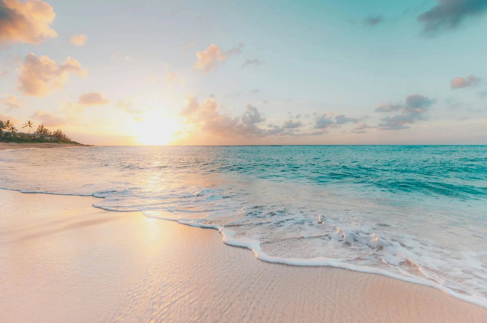
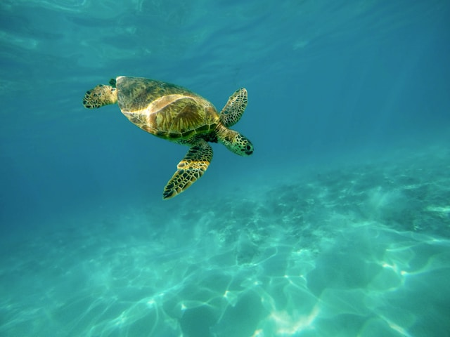
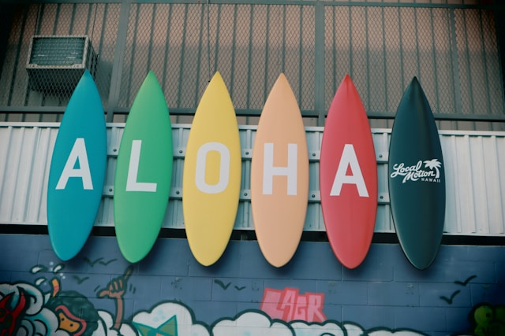

ハワイ

楽園ハワイへようこそ！紺碧の海と白い砂浜が広がるこの島々では、一年中温暖な気候の中で様々なアクティビティが楽しめます。
オアフ島では、活気あふれるワイキキビーチでのサーフィンやショッピング、歴史的なパールハーバーの見学がおすすめです。
マウイ島では、壮大なハレアカラ火山の日の出や、美しいハナロードのドライブが楽しめます。ハワイ島では、キラウエア火山の迫力ある光景や、星空観測が人気です。


日常に彩りを添える、週末旅行のススメ
楽園ハワイへようこそ！紺碧の海と白い砂浜が広がるこの島々では、一年中温暖な気候の中で様々なアクティビティが楽しめます。
オアフ島では、活気あふれるワイキキビーチでのサーフィンやショッピング、歴史的なパールハーバーの見学がおすすめです。
マウイ島では、壮大なハレアカラ火山の日の出や、美しいハナロードのドライブが楽しめます。ハワイ島では、キラウエア火山の迫力ある光景や、星空観測が人気です。